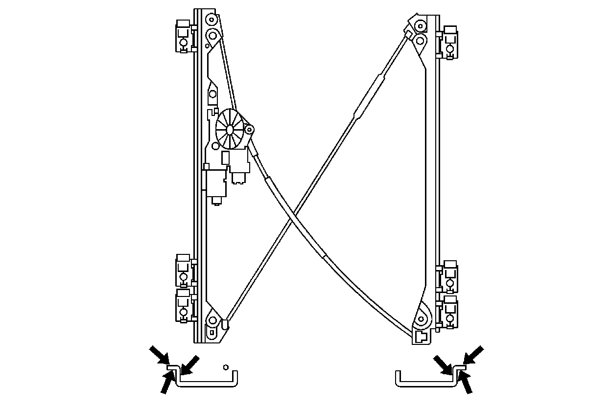
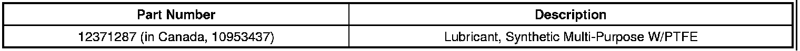
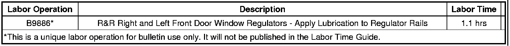

Body - Front Door Window Regulator Squeak Noise
TECHNICALBulletin No.: 07-08-64-019C
Date: April 08, 2011
Subject: Front Door Window Regulator Squeak Noise When Operated (Apply Lubricant)
Models:
2007-2012 Cadillac Escalade, Escalade ESV, Escalade EXT
2007-2012 Chevrolet Avalanche, Silverado, Suburban, Tahoe
2007-2012 GMC Sierra, Yukon, Yukon XL, Yukon Denali, Yukon Denali XL
Supercede:
This bulletin is being revised to add the 2011 and 2012 model years. Please discard Corporate Bulletin Number 07-08-64-019B (Section 08 - Body and Accessories).
Condition
Some customers may comment on a front door glass squeak when operated up or down.
Cause
There may be insufficient lubrication on the regulator rails.
Correction
Lubricate BOTH front door regulators at time of repair using the following procedure.
1. Remove the regulator following SI procedures.

2. Brush a small amount of lubricant on the entire length of both regulator rails. Refer to the illustration for lubricant location.
3. Cycle the door glass to verify that the noise is gone.
4. Reinstall the regulator following SI procedures.
Parts Information

Warranty Information

For vehicles repaired under warranty, use the table.

Disclaimer